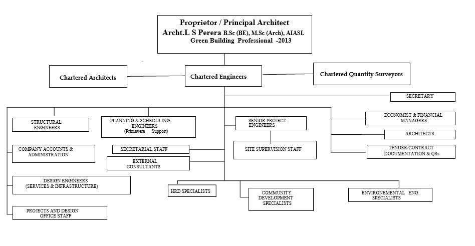

About Us
Background
ARCHITREND CONSULTANTS was established in 1997, mainly to cater to the demand, in the public and private corporate sector, for building Consultancy Services, Environmental Projects and Project managers with high professionalism, dedication, and trustworthiness.
Over the years, ARCHITREND CONSULTANTS has developed into an organization that has served these sectors, in the capacity of Architects, Structural Consultants, Consultants for Green Rated Building Designs, Services and Environmental Consultants and Project Managers, Town Planners as well as a Consultant for Contract Administration, Project Performance Monitoring, and many other specialized fields to their total satisfaction, giving emphasis to sustainable development during the construction and life cycle of the building.
ARCHITREND’S collective disciplinary concepts are heading to capture the excellence in design, seeking more practical and creative solutions for clients’ desires towards an integrated architectural perspective. The firm’s aim is to provide an integrated architectural service to the clients in urban situations.
ARCHITREND CONSULTANTS carry out Total Building Consultancy services and project management activities using strong dedicated computer programmes for planning, programming, monitoring, database management, and communication.
The portfolio of ARCHITREND CONSULTANTS is generally focused towards delivery of services falling within the ambit of Building projects where the emphasis is primarily on outstanding Architectural, Structural and project management. One of our strengths, and hence our reputation, lie in our holistic approach to the building projects.
All assignments of ARCHITREND CONSULTANTS are supported by the Head Office Technical Services Team in Colombo. The members of team are senior practitioners from the respective specialized fields and will be assigned on fulltime basis and an advisory capacity to the project Team.
We have experience in handling a variety of buildings of both in Government and Private sector ranging from Housing Schemes, Factories,Hospitals, University Buildings, Libraries, Laboratory Buildings, Banks,Showrooms, Warehouses, Auditoriums, Hotels , Circuit Bungalows etc
History
Architrend Consultants has established in 1997 as a partnership and re organized as a sole proprietorship of Archt L.S.Perera in the year 2006. Professional Consultancy service provided by Architrend Consultants varies from Individual Houses, Housing Schemes, Hospitals, Renovation Projects, Office Buildings, and Showrooms to Factories for reputed establishments and organizations in Government and Private Sector
Scope of Services
Having maintaining the standards of its philosophy, Architrend offers a comprehensive Consortium Consultancy Services including Architectural Civil, Mechanical and Electrical Engineering, Quantity Surveying and Project Management Consultancy services for any kind of building from inception to completion of the project.
Organizational Chart
{kind=link}